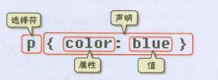

| 说明 | |
|---|---|
| 结构(HTML) | HTML是网页内容的载体。内容就是网页制作者放在页面上想要让用户浏览的信息，可以包含文字、图片、视频等。 |
| 表现(CSS) | CSS样式是表现。就像网页的外衣。比如，标题字体、颜色变化，或为标题加入背景图片、边框等。所有这些用来改变内容外观的东西称之为表现。 |
| 行为(JavaScript / jQuery) | JavaScript是用来实现网页上的特效效果。如：鼠标滑过弹出下拉菜单。或鼠标滑过表格的背景颜色改变。还有购物网站中图片的轮换。可以这么理解，有动画的，有交互的一般都是用JavaScript来实现的 |
HTML文件结构
这里<head>标签用于定义文档的头部，它是所有头部元素的容器。头部元素有<title>、<script><style>、<link>、 <meta>等标签。
在<body>和</body>标签之间的内容是网页的主要内容，如<h1>、<p>、<a>、<img>等网页内容标签，在这里的标签中的内容会在浏览器中显示出来。
标签语法
html中的标签一般都是成对出现的,分开始标签和结束标签。结束标签比开始标签多一个 / ,<title>..</title>;还有一些是自结束标签，如：<br/>
标签与标签之间是可以嵌套的，但先后顺序必须保持一致，如：<div>里嵌套<p>，那么</p>必须放在</div>的前面。如： <div><p>..</p></div>
注释是不可以嵌套的,如：<!-- <!-- 注释部分 --> -->
HTML标签不区分大小写,<h1>和<H1>是一样的,但万维网联盟（W3C）建议小写。
| <h1>...</h1> | 标题 |
| <br /> | 换行 |
| <hr /> | 分割线 |
| <p>...</p> | 段落 |
| <span></span> | 行内 |
| <img src="" /> | 图片 |
| <a href=""></a> | 超链接 |
| <ul>...</ul> | 无序列表 |
| <ol>...</ol> | 有序列表 |
| <li>...</li> | 列表项 |
| <table>...</table> | 表格 |
| <tr>...</tr> | 一行 |
| <td>...</td> | 一列 |
| <th>...</th> | 列标题 |
| <form>...</form> | 表单 |
| <input> | 输入框 |
| <select>...</select> | 下拉列表 |
| <option>...</option> | 下拉选项 |
align="left" 【align="center"，align="right" 左中右】
style="background-color: red" 【样式】
<img alt="加载失败提示" src="../网络/本地路径" border="边框" width="100px" height="120" />【宽高只设置一项即可，另一项会自适应】
<a href="../网络/本地路径" target="_self"> 【" target="_blank"在新窗口打开，默认原窗口打开】
<ul type="square">
<li>...</li>
<li>...</li>
</ul>
在ul标签中添加属性 type="" circle 空心圆，disc 实心圆 (默认)，square 实心方块
在ol标签中添加属性 type="1/a/A/i/I"
<table>
<tr> 【行】
<th></th> 【标题列】
</tr>
<tr>
<td></td> 【列】
</tr>
</table>
table标签中可以声明的属性
border="" 表格的边框
width="" 表格的宽度
height="" 高度
align="" 表格的对其方式
bgcolor="" 背景颜色
td标签内定义对齐方式的属性
align="" 设置当前单元格水平对齐
valign="" 设置当前单元格垂直对齐
bgcolor="" 设置背景颜色
合并单元格
rowspan=" 合并单元格的个数 合并行
colspan=" 合并单元格的个数 合并列
<form action="提交的路径" method="get/post">
<input type="text" name="文本框" value="默认值"/>
<input type="password" name="密码框" value="默认值"/>
<input type="radio" name="单选框" value="..." checked="默认选择">
<input type="checkbox" name="复选框" value="..." checked="默认选择">
<select name="下拉列表">
<option value="china" selected="默认选择">中国</option>
</select>
<input type="hidden" name="隐藏域" value="...">
<input type="button"name="button" value="普通按钮">
<input type="reset" value="重置按钮">
<input type="submit"name="提交按钮" value="...">
</form>
post：将要提交的数据放在请求体中，在url表单里面没有任何数据
提交时以key:value形式，其中文本框、密码框的key为name 值为提交数据
其中单选框、复选框、隐藏域、提交按钮key为name 值为value
下拉列表name在select标签value在option标签提交时同上key为name值为value
onclick: 鼠标点击
onbdclick: 双击
onmouseover: 鼠标移动到元素上
CSS全称为“层叠样式表 (Cascading Style Sheets)”，它主要是用于定义HTML元素（或内容）在浏览器内的显示样式
CSS样式由选择符(选择器)和声明组成，而声明又由属性和值组成

多个声明：如果要定义不止一个声明，则需要用英文分号”;”将每个声明分开。虽然最后一条声明的最后可以不加分号，但尽量在每条声明的末尾都加上分号
每行最好只描述一个属性
CSS对大小写不敏感，但建议使用小写。不过存在一个例外：class 和 id 名称对大小写是敏感的。
CSS注释：/* 注释内容 */
方式一：写在标签的style属性中
<p style=“font-size:30px”>字体大小用px表示</p>方式二：写在html头的style标签中(style标签一般写在head标签与title标签之间)
<style type="text/css">
p{
background-color: yellow;
}
</style>方式三：写在外部的css文件中，然后通过link标签引入外部的css文件
<link rel="stylesheet" type="text/css" href="style.css"> 优先级按照上述讲的三种方式依次降低
宽度：width：20px; 或 %20
高度：height：20px; 或 %20
背景颜色：background-color： #00F6DE
字体大小：font-size：20px;
文本居中：text-align：center;
div居中：margin-left：auto; margin-right：auto;
1px实线边框：border：1px solid;
列表去修饰：ul{list-style：none;}
对于样式暂时不考虑深入了解